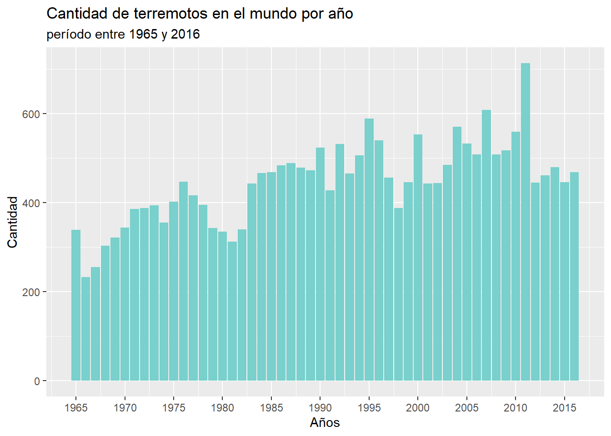
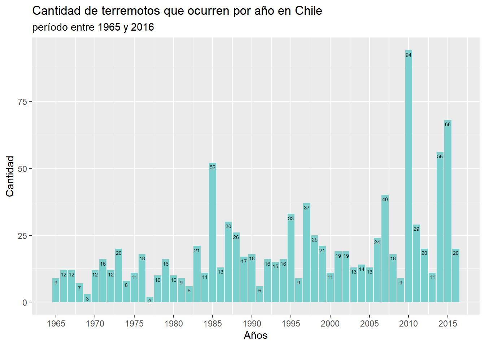
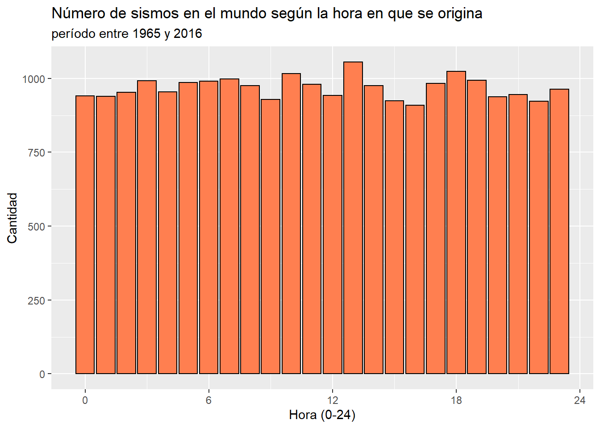

| Descripción de variables | ||
| Variables | Tipo | Descripción |
|---|---|---|
| Fecha | Fecha | Muestra la fecha en que ocurrio el sismo |
| Hora | Tiempo | Entrega la hora en que se originó un terremoto |
| Latitud | Numérico | Señala la latitud como cordenada geografica |
| Longitud | Numérico | Señala la longitud como cordenada geografica |
| Magnitud | Numérico | Es la magnitud en escala Richter de los terremotos |
| País | Carácter | Corresponde al país en el que sucedio el sismo |
| Fuente: Kaggle.com | ||
Terremotos a nivel mundial desde 1965-2016
Introducción
Los terremotos son liberaciones de energía que se emiten a la superficie de la tierra, debido al choque o roce de las placas tectónicas, y puede provocar daños de gran medida los cuales, afectan directamente a ciudades y zonas rurales. Además origina otros desastres naturales, tales como, derrumbes o tsunamis. Como todos saben, estos desastres son una latente amenaza para las personas ya que estos no se pueden predecir.
Por esta razón, algunas de las preguntas más comunes que se plantean son: A pesar de que los terremotos no se pueden predecir, ¿existe algún patron en la frecuencia de este fenómeno?, ¿cuántos sismos occurren aproximadamente en un año?, ¿hay una hora en donde se originan más temblores? y si es esto correcto, ¿cuál es?
Gracias al Centro De Sismología Internacional (CSI), es la organización mundial, que se encarga de registrar la magnitud, y la localización de los sismos. Es por ello que con la labor de esta organización se puede usar esta información recopilada, para hacer innovaciones que podrían prevenir catástrofes graves, por ejemplo, cambiando las estructuras de hormigón de los edificios y las casas de tal forma que sean estables ante las ondas sísmicas, o construir muros anti tsunami para romper las olas que se acercan a la costa.
Dejando esto claro, en este informe se realizará un análisis estadístico descriptivo con datos recopilados por la CSI, con el objetivo de entregar información sobre los países con mayor actividad sísmica y también determinar un intervalo sobre la profundidad en que se originan los terremotos. Se espera así conocer cuáles son los países que requieren innovaciones frente a los sismos.
Este trabajo se divide en cuatro secciones. Primero se dará información y contexto sobre qué son los terremotos y por qué es importante hacer mediciones sobre estos fenómeno . Luego se dará una explicación de cada variable disponible en la base del CSI. En la tercera parte se entregarán gráficos, tablas y análisis sobre los terremotos. Y en último lugar, se realizará una conclusión en la que se identificarán posibles patrones en la magnitud, frecuencia y hora de los terremotos.
Descripción de variables
La siguiente tabla muestra las variables que se usarán en el analisis , a que tipo corresponden, y una breve definicion sobre la información que entregan.
Se puede apreciar una variedad de tipos de variables, pero en este trabajo se usaran en su mayoria las columnas que contienen la fechas, horas, magnitudes, y paises en la que ocurren los terremotos. Para este estudio, solo se consideraran los terremotos con magnitud mayor a 5,5.
Graficos
Se quiere estudiar la cantidad de terremotos que hay en el mundo, y su relación con variables, tales como año, magnitud, hora, etc. Para ello se adjuntarán graficos y tablas que entregarán información sobre la frecuencia de los sismos.
Uno de los objetivos de este trabajo es conocer el número de sismos que hay en el periodo de un año, para asi conocer el rango de repetición de estos fenomenos. Con este proposito se adjunta siguiente grafico que entrega la cantidad de terremotos que hay en el mundo en cada año, desde 1965 hasta 2016:

Se puede apreciar, que el 2011 fue el año con la mayor cantidad de sismos en el planeta, con un total de 713 terremotos, esto se puede deber a las replicas que fueron originadas por el terremoto de magnitud 9,1 en Japón, el día 11/03. Por el contrario, el año con la menor cantidad de sismos fue en 1965 con la suma de 233 temblores, esto podria explicarse a que en esa epoca no existia aún la tecnologia necesaria para recopilar todos los terremotos que ocurrian en el mundo.


| Fecha | Magnitud | País |
|---|---|---|
| 2004 | 9.1 | Indonesia |
| 2011 | 9.1 | Japón |
| 2010 | 8.8 | Chile |
| 1965 | 8.7 | Rusia |
| 2005 | 8.6 | Indonesia |